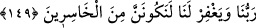
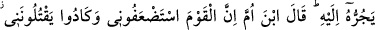
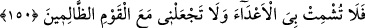

layık olduğu yere koymadılar ve hak ettiği değeri vermediler. Buzağıyı tanrı edinmek,
İsrâiloğulları’nın ilk yaptıkları (hataları) değildir.
Farsça tefsirde şöyle denilmektedir: Kuşeyrî’nin Letâifü’l-işârât adlı eserinde
zikredilmiştir ki: Kendi yaptığına tapan ümmet ile, kendini yaratana ibadet eden ümmet
arasında ne kadar fark var?
Senin yaptığın senin işine yaramaz
İki âlemde de senin dostun, seni yaratandır
149. Pişman olup da kendilerinin gerçekten sapmış olduklarını görünce dediler ki:
Eğer Rabbimiz bize acımaz ve bizi bağışlamazsa mutlaka ziyana uğrayanlardan
olacağız!
“Ne zaman ki başları elleri arasına düşürüldü” Bu ifâde, onların yaptıklarından
ötürü son derece pişman olduklarından kinayedir. Çünkü çok pişman olan kimse, başını
aşağı indirerek elini ısırır. Böylece sanki kafası eline düşmüş gibi olur. Buna göre mânâ
şöyledir: “Onlar, buzağıyı tanrı edinip ona taptıklarına son derece pişman oldular.”
“ve” buzağıyı tanrı edinerek “kendilerinin gerçekten sapmış olduklarını gördüler,”
sanki gözleriyle görmüş gibi böyle olduğunu kesin olarak bildiler ve anladılar, “dediler
ki: “Eğer Rabb’imiz”, günahlara keffaret olan Tevrat’ı indirmekle “bize acımaz ve”
hatalarımızı cezalandırmaktan vazgeçerek “bizi bağışlamazsa elbette ziyana
uğrayanlardan” ve helâk olanlardan “oluruz.”
Burada anlatılan İsrâiloğulları’nın pişman olmaları, sapıklıklarını görmeleri ve
kendilerini affetmesi için Allah’a yalvarmaları, Tâhâ suresindeki ayetlerde belirtildiği
üzere Mûsâ (a.s.)’ın Tûr’dan dönüşünden sonra olmuştur. Fakat burada Mûsâ (a.s.)’ın
dönüşünden önceye alınması, onlardan sâdır olan söz ve davranışları bir yerde
anlatmak maksadıyladır.